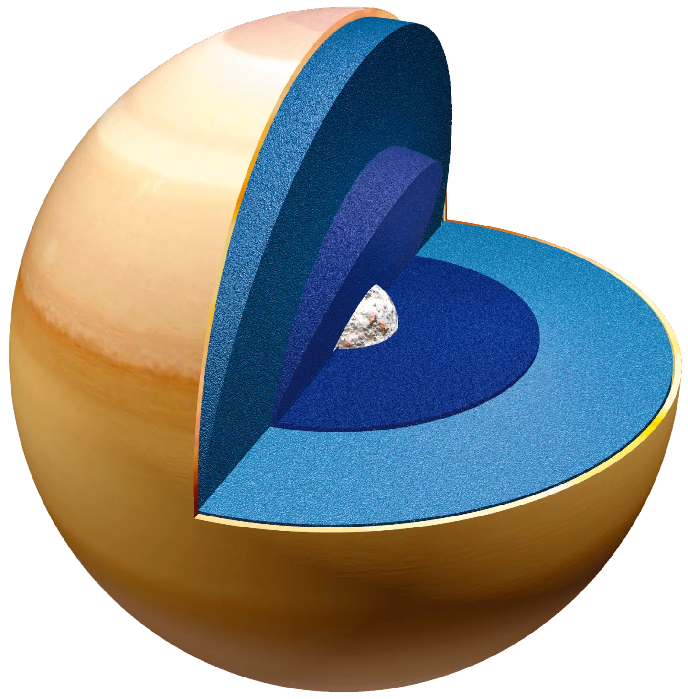

SATURN
➜
Saturn is the sixth planet from the Sun and the second-largest in the Solar System, after Jupiter. It is a gas giant with an average radius of about nine and a half times that of Earth. It only has one-eighth the average density of Earth; however, with its larger volume, Saturn is over 95 times more massive.
Saturn's interior is most likely composed of a core of iron–nickel and rock (silicon and oxygen compounds).
Quick Facts
Day
10.7 hours
YEAR
29 Earth years
]
Radius
58,232 kilometers
Planet Type
Gas giant
Moons
53
Rings
7
source: solarsystem.nasa.gov
10 Need-to-Know Things About Neptune
1
Nine Earths side by side would almost span Saturn’s diameter. That doesn’t include Saturn’s rings.
2
Saturn is the sixth planet from our Sun (a star) and orbits at a distance of about 886 million miles (1.4 billion kilometers) from the Sun.
3
Saturn takes about 10.7 hours (no one knows precisely) to rotate on its axis once—a Saturn “day”—and 29 Earth years to orbit the sun.
4
Saturn is a gas-giant planet and therefore does not have a solid surface like Earth’s. But it might have a solid core somewhere in there.
5
Saturn's atmosphere is made up mostly of hydrogen (H2) and helium (He).
6
Saturn has 53 known moons with an additional 29 moons awaiting confirmation of their discovery—that is a total of 82 moons.
7
Saturn has the most spectacular ring system, with seven rings and several gaps and divisions between them.
8
Few missions have visited Saturn: Pioneer 11 and Voyagers 1 and 2 flew by; But Cassini orbited Saturn 294 times from 2004 to 2017.
9
Saturn cannot support life as we know it, but some of Saturn's moons have conditions that might support life.
10
About two tons of Saturn’s mass came from Earth—the Cassini spacecraft was intentionally vaporized in Saturn’s atmosphere in 2017.
X

The last picture of Saturn